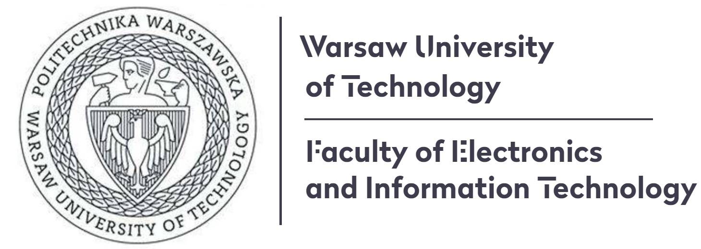

Ting WANG

Associate Professor, PhD Supervisor
Shanghai Key Laboratory of Trustworthy Computing
Engineering Research Center of Software/Hardware Co-design Technology and Application，Ministry of Education
Software Engineering Institute,
East China Normal University
Address: Room B1116, Science Building, 3663 N. Zhongshan Rd., Shanghai, PR.China, 200062
Email: twang(at)sei.ecnu.edu.cn
Homepage@ECNU: link
I am an associate professor at the Software Engineering Institute of ECNU, with the Shanghai Key Laboratory of Trustworthy Computing and the Engineering Research Center of Software/Hardware Co-design Technology and Application，Ministry of Education. I am leading the Intelligent Computing and Networking (ICN) Lab, and our research mainly focuses on Datacenter Networking, Machine Learning Systems, AI-driven Intelligent Networking, Fog/Edge Computing and Cloud Computing. I obtained my Eng.Msc degree in Computer Infomation System Engineering from Warsaw Unviersity of Technology, Poland (sponsered by China Scholarship Council) in 2011 under the supervision of Prof. Jacek Wojciechowski, and my Ph.D. degree in Computer Science and Engineering from HKUST in 2015 under the supervision of Prof.Mounir Hamdi (IEEE Fellow). Prior to joining ECNU in 2020, I worked at the Bell Labs as a research scientist from 2015 to 2016, and at Huawei as a senior engineer from 2016 to 2020.
Research Interests
- Artificial Intelligence: Distributed Machine Learning, Federated Learning, Multi-agent Reinforcement Learning, LLM, Robotics
- Cloud/Edge Computing: Edge AI, Cloud Intelligence, Cloud-Edge Collaboration, Data Center Networks
- Intelligent Networking: AI-assisted Network Optimization
Latest News (more)
 [Dec-2025] Our paper "Throughput-Optimized Service Routing for Microservice Flows in LEO Satellite Networks," was accepted by IEEE TMC (CCF-A).
[Dec-2025] Our paper "Throughput-Optimized Service Routing for Microservice Flows in LEO Satellite Networks," was accepted by IEEE TMC (CCF-A).
- [Nov-2025] Our paper "Multi-Objective Reinforcement Learning for Dynamic Distributed Load Balancing in Data Centers," was accepted by Computer Networks (CCF-B).
- [Oct-2025] Our paper "Satellite Federated Fine-Tuning for Foundation Models in Space Computing Power Networks," was accepted by IEEE TWC (中科院SCI一区).
- [Oct-2025] Our four papers were accepted by IEEE ICPADS (CCF-C).
- [Aug-2025] Our paper "Latency-Minimal Decentralized LAM Training with Looped Transformers in Heterogeneous LEO Satellite Constellations" was accepted by IEEE Globecom 2025. (CCF-C).
- [Jul-2025] Our paper "Brain-Inspired Decentralized Satellite Learning in Space Computing Power Networks" was accepted by IEEE Transactions on Mobile Computing (TMC), 2025. (CCF-A).
- [Jul-2025] Our paper "Multi-agent Independent PPO-based Automatic ECN Tuning for High-Speed Data Center Networks" was accepted by IEEE Cluster, 2025. (CCF-B).
- [May-2025] Our paper was accepted by IEEE Transactions on Network Science and Engineering (TNSE) (中科院SCI一区).
- [May-2025] Our paper "HAPFL: Heterogeneity-aware Personalized Federated Learning via Hierarchical RL and Model Distillation" was accepted by the IEEE International Conference on Web Services (ICWS), 2025. (CCF-B).
- [Apr-2025] Our paper "Robust Multimodal Information Bottleneck for Satellite-to-Ground Task-Oriented Communication" was accepted by 30th IEEE Symposium on Computers and Communications (ISCC), 2025. (CCF-C).
- [Feb-2025] Our paper "Physically Enhanced Neural Network for Lithium-Ion Battery State of Health Estimation" was accepted by Journal of Energy Storage, 2025. (中科院SCI二区).
- [Feb-2025] I will serve as the Program Chair for ICIT 2025. Welcome to submit your original papers to share your recent excellent research findings!
- [Jan-2025] Our paper "GIRP: Energy-Efficient QoS-Oriented Microservice Resource Provisioning via Multi-Objective Multi-Task Reinforcement Learning" was accepted by IEEE Transactions on Mobile Computing (TMC), 2025. (CCF-A).
- [Jan-2025] Our two papers were accepted by IEEE ICC 2025 (CCF-C).
- [Jan-2025] Our paper "A Framework for Runtime Safety of Industrial Control Systems through Runtime Verification" was accepted by IEEE IOTJ (中科院SCI一区).
- [Dec-2024] Our paper "Multi-Task Reinforcement Learning For Collaborative Network Optimization in Data Centers" was accepted by IEEE INFOCOM 2025 (acceptance ratio 18.6%) (CCF-A).
- [Oct-2024] Our paper "Multi-objective Deep Reinforcement Learning for Function Offloading in Serverless Edge Computing" was accepted by IEEE IEEE Transactions on Serverices Computing (CCF-A).
- [Oct-2024] Our paper "Over-the-Air Computation Empowered Vertically Split Inference" was accepted by IEEE TWC (中科院SCI一区).
- [Oct-2024] Our paper "Federated Multi-Objective Meta-Reinforcement Learning for Adaptive Edge Task Offloading" was accepted by IEEE HPCC 2024 (CCF-C), acceptance rate 25.4%.
- [Jul-2024] Our paper "Satellite Federated Fine-Tuning for Foundation Models: Architecture Design and System Optimization" was accepted by IEEE Globecom 2024 (CCF-C).
- <[May-2024] Our paper "A Lightweight Group-based SDN-driven Encryption Protocol for Smart Home IoT Devices" was accepted by Computer Networks (CCF-B).
- [Apr-2024] I will serve as the Conference Chair for ACCC 2024, Session Chair for ICSEE 2024, and TPC member for AISS 2024. Welcome to submit your original papers to share your recent excellent research findings!
- [Jan-2024] Our paper "Towards Intelligent Adaptive Edge Caching using Deep Reinforcement Learning" was accepted by IEEE Transactions on Mobile Computing (CCF-A).
- [Dec-2023] Our paper "GreedW: A Flexible and Efficient Decentralized Framework for Distributed Machine Learning" was accepted by IEEE Transactions on Computers (CCF-A).
- [Dec-2023] Our paper "Situation-Dependent Causal Influence-Based Cooperative Multi-agent Reinforcement Learning" was accepted by AAAI 2024 (CCF-A).
- [Dec-2023] Our paper "Towards Learning-based Energy-Efficient Online Coordinated Virtual Network Embedding Framework" was accepted by Computer Networks (CCF-B).
- [Oct-2023] I will serve as the Program Chair for 2024 4th International Conference on Artificial Intelligence, Automation and Algorithms (AI2A), which is indexed by EI Compendex and Scopus. Welcome to submit your original papers to share your recent excellent research findings!
- [Oct-2023] Our paper "LWSA: A Learning-Based Workflow Scheduling Algorithm for Energy-Efficient UAV Delivery System" was accepted by IEEE ICPADS 2023 (CCF-C).
- [Oct-2023] Our paper "Decentralized Over-the-Air Federated Learning by Second-Order Optimization Method" was accepted by IEEE TWC (中科院SCI一区).
- [Oct-2023] Our paper "CERT-DF: A Computing-Efficient and Robust Distributed Deep Forest Framework with Low Communication Overhead" was accepted by IEEE TPDS (CCF-A).
- [Sep-2023] Our paper won the Best Paper Award at IEEE MeditCom 2023. Congratulations to Jiali Wang! (Official Announcement: link).
- [Sep-2023] Our paper "Parameterized Deep Reinforcement Learning with Hybrid Action Space for Collaborative Task Offloading at the Edge" was accepted by IEEE Internet of Things Journal (中科院SCI一区).
- [Sep-2023] Our paper "Green Federated Learning Over Cloud-RAN with Limited Fronthual Capacity and Quantized Neural Networks" was accepted by IEEE TWC (中科院SCI一区).
- [Aug-2023] Our paper "Parameterized Deep Reinforcement Learning with Hybrid Action Space for Energy Efficient Data Center Networks" was accepted by Computer Networks (CCF-B).
ICN Research Group (more)
- ICN RG Leader
- Ting Wang
- Ph.D Students
- Xiao Du
- Peng Yang
- Full-time Master Students
- Jiali Wang (2021-2024)
- Kai Cheng (2021-2024)
- Xiaoyu Jia (2022-2025)
- Yuxiang Deng (2022-2025)
- Junkai Qian (2022-2025)
- more...
- Part-time Master Students
- Jianguo Xue (2021-2024)
- Xin Jiang (2021-2024)
- Zhonglei Duan (2021-2024)
- more...
Teaching (more)
- See here.
Selected Publications (full list, Google Scholar)
- Ting Wang, Yuxiang Deng, Jiawei Mao, Mingsong Chen, Gang Liu, Jieming Di, Keqin Li. "Towards Intelligent Adaptive Edge Caching using Deep Reinforcement Learning", IEEE Transactions on Mobile Computing (TMC), 2024.
- Ting Wang, Xin Jiang, Qin Li, Haibin Cai. "GreedW: A Flexible and Efficient Decentralized Framework for Distributed Machine Learning", IEEE Transactions on Computers (TC), 2024.
- Xiao Du, Yutong Ye, Pengyu Zhang, Yaning Yang, Mingsong Chen, Ting Wang*, "Situation-Dependent Causal Influence-Based Cooperative Multi-agent Reinforcement Learning", 38th AAAI Conference on Artificial Intelligence 2024 (AAAI-24).
- Peng Yang, Yuning Jiang, Dingzhu Wen, Ting Wang*, Colin N. Jones, Yuanming Shi. "Decentralized Over-the-Air Federated Learning by Second-Order Optimization Method", IEEE Transactions on Wireless Communications (TWC), 2023.
- Li'an Xie, Ting Wang*, Shuyi Du, Haibin Cai. "CERT-DF: A Computing-Efficient and Robust Distributed Deep Forest Framework with Low Communication Overhead", IEEE Transactions on Parallel and Distributed Systems (TPDS), 2023.
- Ting Wang, Yuxiang Deng, Zhao Yang, Yang Wang, Haibin Cai. "Parameterized Deep Reinforcement Learning with Hybrid Action Space for Collaborative Task Offloading at the Edge", IEEE Internet of Things Journal, 2023.
- Jiali Wang, Yijie Mao, Ting Wang*, Yuanming Shi. "Green Federated Learning Over Cloud-RAN with Limited Fronthual Capacity and Quantized Neural Networks", IEEE Transactions on Wireless Communications (TWC), 2023.
- Junkai Qian, Yuning Jiang, Xin Liu, Qiong Wang, Ting Wang*, Yuanming Shi, Wei Chen. "Federated Reinforcement Learning for Electric Vehicles Charging Control on Distribution Networks", IEEE Internet of Things Journal, 2023.
- Zhihao Yue, Jun Xia, Zhiwei Ling, Ming Hu, Ting Wang, Xian Wei, Mingsong Chen. "Model-Contrastive Learning for Backdoor Elimination", ACM International Conference on Multimedia (MM), 2023.
- Yutong Ye, Yingbo Zhou, Jiepin Ding, Ting Wang, Mingsong Chen, Xiang Lian. "InitLight: Initial Model Generation for Traffic Signal Control using Adversarial Inverse Reinforcement Learning", International Joint Conference on Artificial Intelligence (IJCAI), 2023.
- Jinglian He, Yijie Mao, Yong Zhou, Ting Wang, Yuanming Shi. "Reconfigurable Intelligent Surfaces Empowered Green Wireless Networks with User Admission Control", IEEE Transactions on Communicatioins (TCOM), 2023.
- Ting Wang, Xiao Du, Mingsong Chen, Keqin Li. "Hierarchical Relational Graph Learning for Autonomous Multi-Robot Cooperative Navigation in Dynamic Environments", IEEE Transactions on Computer-Aided Design of Integrated Circuits and Systems (TCAD), 2023.
- Jiepin Ding, Mingsong Chen, Ting Wang, Junlong Zhou, Xin Fu, Keqin Li. "A Survey of AI-Enabled Dynamic Manufacturing Scheduling: From Directed Heuristic to Autonomous Learning", ACM Computing Surveys, 2023.
- Yisheng Song, Ting Wang*, Puyu Cai, Subrota K Mondal, Jyoti Prakash Sahoo. "A Comprehensive Survey of Few-shot Learning: Evolution, Applications, Challenges, and Opportunities", ACM Computing Surveys, 2023.
- Yutong Ye, Jieping Ding, Ting Wang, Junlong Zhou, Xian Wei, Mingsong Chen. "FairLight: Fairness-Aware Autonomous Traffic Signal Control with Hierarchical Action Space", IEEE Transactions on Computer-Aided Design of Integrated Circuits and Systems (TCAD), 2022
- Xiao Du, Ting Wang*, Qiang Feng, Chenhui Ye, Tao Tao, Lu Wang, Yuanming Shi, Mingsong Chen. "Multi-agent Reinforcement Learning for Dynamic Resource Management in 6G in-X Subnetworks", IEEE Transactions on Wireless Communications (TWC), 2022.
- Zekuan Fang, Fan Zhang, Ting Wang, Xiang Lian and Mingsong Chen. "MonitorLight: Reinforcement Learning-based Traffic Signal Control using Mixed Pressure Monitoring", ACM International Conference on Information and Knowledge Management (CIKM), 2022.
- Jun Xia, Tian Liu, Zhiwei Ling, Ting Wang, Xin Fu and Mingsong Chen, "PervasiveFL: Pervasive Federated Learning for Heterogeneous IoT Systems", CODES+ISSS and IEEE TCAD.
- Peng Yang, Yuning Jiang, Ting Wang*, Yong Zhou, Yuanming Shi, and Colin N. Jones, "Over-the-Air Federated Learning via Second-Order Optimization", IEEE Transactions on Wireless Communications (TWC), 2022.
- Jun Xia, Ting Wang, Jieping Ding, Xian Wei, Mingsong Chen. "Eliminating Backdoor Triggers for Deep Neural Networks Using Attention Relation Graph Distillation", International Joint Conference on Artificial Intelligence (IJCAI), 2022.
- Zexi Chen, Ting Wang*, Haibin Cai, Subrota K. Mondal, and Jyoti Prakash Sahoo, "BLB-gcForest: A High-Performance Distributed Deep Forest with Adaptive sub-Forest Splitting", IEEE TPDS, 2021.
Professional Activities (more)
- Founding Editor-in-Chief of ICSES Interdisciplinary Transactions on Cloud Computing, IoT, and Big Data (IITCIB)
- Associate Editor of IEEE Access
- Editorial Board (Technical Committee) of Journal of Computer Communications, Elsvier
Useful Resources
- How to Read a Paper, by Prof. Srinivasan Keshav.
- A Research to Engineering Workflow, by Dr. Dustin Tran.
- Mathematical Writing, by Donald E. Knuth, Tracy Larrabee, and Paul M. Roberts.
- Whitesides' Group: Writing a Paper, by George M. Whitesides.
- Writing reviews for systems conferences, by Timothy Roscoe.
- How to write a paper, by Mike Ashby.
- Pointers for Leading Paper Discussions, by Randy H. Katz.
- Machine Learning Materials for Beginners.
 |
||
| |